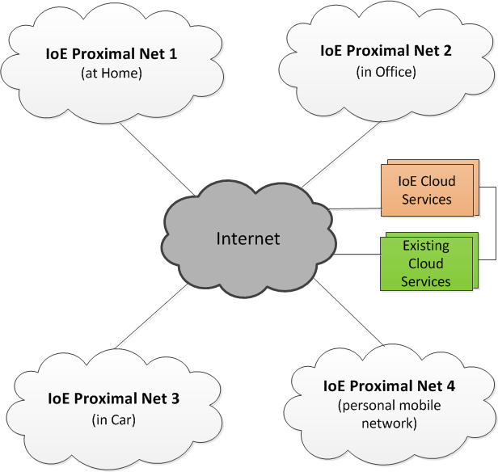
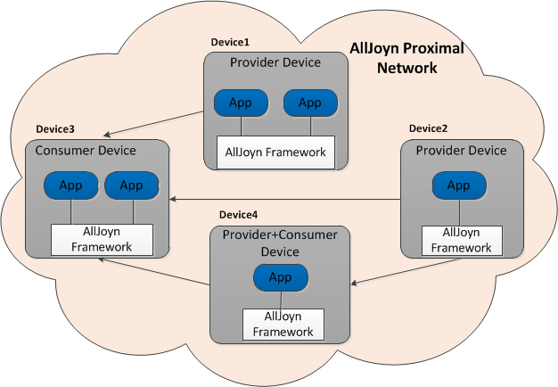
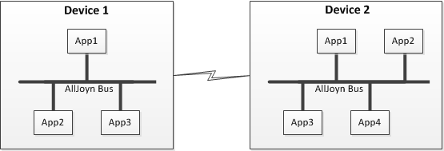
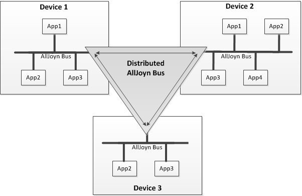
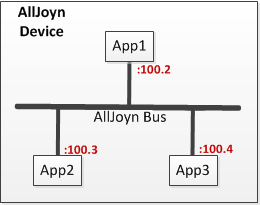
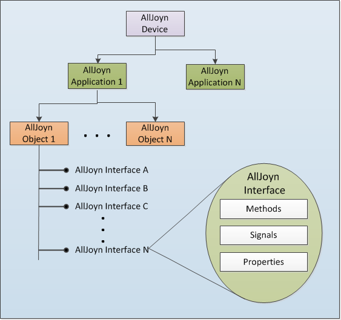

AllJoyn™ 系统描述
发布历史
| 发布版本 | 日期 | 改变内容 |
|---|---|---|
| 14.06 | 9/26/2014 | 初版 |
| 14.12 | 12/17/2014 | 14.12中加入的新功能:
其他更新:
|
| 15.04 | 4/29/2015 | 在 Thin Apps 部分中有关于如下功能的更新:
其他更新:
|
此部分详细描述了 AllJoyn 在系统层中的工作方式
系统概览
概览
物联网（IoE）是一个令人兴奋的愿景，他承诺将人与物或物与物以各种方式连接在一起；这将会创造新的容量和丰富的体验，并将使我们的生活更简单。 IoE 承诺将把人，进程，数据以及物品汇聚到一起，给网络化的连接带来前所未有的相关性及价值，将信息转化成行动，并带来之前从未实现过的能力。
IoE 将会为住宅，办公室，汽车，街道，机场以及购物中心等等带来智能物品和智能设备。这些设备将为用户提供实时的情景体验。距离相近的 IoE 设备将组 建近端 IoE 网络，例如，在住宅内，在车里或者在办公室里。IoE 的愿景是实现多个 IoE 近端网络的互连互通。
对比现今存在的因特网以及物联网可以发现很多有趣的事。现今的因特网由受因特网编号管理局 (IANA) 集中管理的数百万已注册的高层域名构成。域名的发 现可由通过域名系统（DNS）进行按层次查找完成。在 IoE 网络中，会存在潜在的数百亿 IoE 设备。由可测量性的角度看，想要试图通过一个中央实体对 IoE 设备注册进行管理是不太可能的。并且在 IoE 网络中，基于邻近域的设备间交互减少了延迟，并且不需要将每个设备都直连到因特网。因此，物联网的发现机 制应该是基于邻域标准自动触发的。由于越来越多的个人及家庭设备会将接口暴露给物联网用于连接及控制，安全性和隐私性变得尤为重要。
下图展示了多个通过因特网互相连接的邻域 IoE 网络的一个实例。

Figure: IoE 网络实例
通过直接的点对点连接，IoE 邻域网络中的智能设备可以做到对其他设备的动态发现和通信。对于某些使用网络地址转换的设备，他们可以通过基于云的发现服务来发现对方。基于云的发现服务也可以被用于不同的 IoE 邻域网络内 IoE 设备的发现和连接。综合 IoE 网络可能会有附加的用来提供特殊功能的基于云 的服务，例如，远程住宅自动化，远程诊断/保养，数据收集/报告等等。IoE 网络还可以将一些现存的基于云的服务集成进来，例如将 Facebook 或 Twitter 集成到设备状态更新中。
在任何 IoE 网络中，内在或夸 IoE 邻域网中设备的协同互用性对提供丰富的，可扩展的，为设备提供服务及应用程序的 IoE 生态系统至关重要。在设计 IoE 系统时，一定要考虑一些特定的关键设计层面，包括设备的广播及发现，移动性和动态 IoE 网络管理，安全性和隐私性，跨载体/操作系统的协同互用 性，用以支持瘦终端/哑终端的轻量化解决方案，可延展性以及总体可测量性。一个成功的 IoE 系统必须是开放的，并提供可用于跨越不同垂直用例的水平化 解决方案。
AllJoyn 系统专注于这些核心设计层面。此系统提供开源的软件框架，可实现基于邻近域的，点对点的，承载无关的 IoE 设备网络化。AllJoyn 系统为设备及 应用程序提供了可以通过使用点对点协议在邻近域网络内广播并发现对方的方式。
AllJoyn 开源软件系统提供了可以完成夸异构分布式系统的 IoE 设备间通信的框架。AllJoyn 是一个基于邻近域的点对点通信平台，面向在分布式系统中的设 备。他不需要使用集中式的服务器来完成通信。支持 AllJoyn 的设备运行一个或多个 AllJoyn 应用程序，并形成点对点的 AllJoyn 网络。AllJoyn 系统是分 布式的软件平台，支持运行在 IoE 设备上的应用程序推广，发现服务，以及连接到其他设备以使用其他设备提供的服务。AllJoyn 框架使这些应用程序可以通 过可被发现的 API 来暴露自己的功能，这些 API 是定义应用程序所提供的功能的契约。
在邻近域 AllJoyn 网络中， 安装在 IoE 设备上的 AllJoyn 应用程序们互为 peers. 一个支持 AllJoyn 的应用程序可以作为一个供应方，消费方，或者既是 供应方也是消费方，这取决于服务模型。供应方的应用程序实现服务，并将它们通过 AllJoyn 网络推广。对这些服务有兴趣的消费方应用程序就可以连接到供 应方应用程序并根据自己的喜好使用服务。一个 AllJoyn 的应用程序可以同时扮演供应方和消费方的角色。这意味着该应用程序可以广播某一套他所支持的服 务，也可以发现并利用其它在邻近域中的应用程序所提供的各种服务。
下图展示了有4台设备的 AllJoyn 网络

Figure: AllJoyn 网络
设备1和设备2只有提供 AllJoyn 服务的供应方应用程序。设备3只有使用其它设备服务的消费方应用程序。设备4的应用程序可以同时充当供应方和消费方。设备4上的应用程序使用设备2的应用程序所提供的服务。同时他提供的服务还被设备3上的应用程序所使用。箭头的方向从供应方指向消费方，指示着服务的消费。
AllJoyn 框架为 IoE 设备之间的通信建立了一个底层总线结构。在 IoE 设备上的 AllJoyn 应用程序 通过 AllJoyn 总线与其他应用程序连接并通信。 AllJoyn 总线为在 IoE 设备上的应用程序提供了可以发送通知或者交换数据的平台以及无线链路无关的传输机制。AllJoyn 总线负责处理与底层物理的特定网 络传输相配饰的工作。
每一个 AllJoyn 的应用程序都连接到本地的 AllJoyn 总线。一个给定的本地 AllJoyn 总线可以连接一个或者多个应用程序。AllJoyn 总线使附着在它上面的 应用程序可以完成广播服务，发现服务以及互相通信的功能。在多个设备上的 AllJoyn 总线用类似 Wi-Fi 的底层网络技术来互相通信。
AllJoyn 平台的开源实现方式提供了一个生态系统，诸多用户可以通过添加新功能及增强功能来为 AllJoyn 生态系统做贡献。此系统支持通过 OS 抽象层实现 的操作系统无关性，使得 AllJoyn 框架以及应用程序可以在多种操作平台上运行。AllJoyn框架支持大多数的标准 Linux 发行版，Android2.3 及后续版本， 常见的 Microsoft Windows 操作系统，Apple iOS, Mac OS X, 嵌入式的诸如 OpenWRT 的操作系统以及类似 ThreadX 的实时操作系统。
AllJoyn 框架同时也支持多种用于为 IoE设备开发应用程序及服务的编程语言，这丰富了开发 AllJoyn 应用及服务的生态系统。 AllJoyn 框架目前支持C, C++, Java, C#, JavaScript, 以及 Objective-C.
AllJoyn 系统以及 D-bus 规范
AllJoyn系统
AllJoyn 实现了一个广泛兼容的 D-Bus over-the-wire 协议，并遵守在 D-Bus 规范中的众多命名习俗和指导原则。AllJoyn 延展并显著强化了 D-Bus 消息 总线，以支持分布式总线的场景。AllJoyn 系统使用按照下文描述的 D-Bus 规范：
- 使用 D-Bus 的数据类型系统以及序列化格式
- 通过添加 flags 以及 headers（具体细节请参阅Message format）实现增强版的 D-Bus over-the-wire 协议。
- 对 well-known names （服务器），接口，接口成员（方法，信号以及属性）以及对象路径的命名使用 D-Bus 的命名原则。
- 使用 D-Bus 定义的简单认证与安全层（SASL）框架完成应用程序层中支持 AllJoyn 应用程序间的认证。并支持不限于由 D-Bus 规范定义的多种认证机制。
D-Bus 规范请参阅以下网址： (http://dbus.freedesktop.org/doc/dbus-specification.html).
AllJoyn 系统的关键概念
如之前所述，AllJoyn 框架为应用程序提供可以推广和发现服务，以及使用其他应用程序提供的功能的底层总线结构。为了实现此结构，AllJoyn 框架提供了 一个可供应用程序交互的面向对象的软件框架。
AllJoyn 路由
AllJoyn 路由组件为 AllJoyn 系统提供核心功能，包括点对点推广/发现，建立连接，广播信号以及控制/投递数据消息。AllJoyn 路由通过实现软件总线功能 以及到应用程序的连接使 AllJoyn 框架的核心功能受益。每一个 AllJoyn 路由的实例都有一个自行分配的全球唯一标识符（GUID）。此 GUID 并不是持久有 效的，每当 AllJoyn 路由启动时都会被分配一个新的 GUID. AllJoyn 路由可以是捆绑在每一个应用程序上的（捆绑模式），也可以是被众多应用程序所分享 的（独立模型），如下图所示。

Figure: AllJoyn 捆绑式以及独立式 router 举例
AllJoyn 路由有定义了被支持功能集合的相关 AllJoyn 协议译本。在连接建立后，此协议会在 AllJoyn 网络上的 AllJoyn 路由之间交换，作为建立 AllJoyn 会话的一部分。
AllJoyn 总线
AllJoyn 路由提供了软件总线功能，借助此功能一个或多个应用程序可以与总线建立连接并交换消息。在设备上的 AllJoyn 路由实例建立本地的 AllJoyn 逻 辑总线，如下图所示。

Figure: AllJoyn 路由到 AllJoyn 总线的映射转换
AllJoyn 逻辑总线映射到一个单独的 AllJoyn 路由有以下两种情况：
- 设备上只有一个应用程序的捆绑部署模型，如 UC2 所示。
- 设备上有一个或多个应用程序的独立部署模型，如 UC3 所示。
在设备上有多个应用程序的捆绑部署模型中，AllJoyn 逻辑总线映射到多个 AllJoyn 路由实例的情况请参阅 UC1.
*NOTE:8 在此文档中，AllJoyn 路由与 AllJoyn 总线这两个术语是可以相互替换的，他们指代着一个由 AllJoyn 系统提供的相同集合的总线功能。
下图是在有多个应用程序连接到总线的两个不同设备上的 AllJoyn 本地总线的简化视图。

Figure: AllJoyn 总线
AllJoyn 总线为连接到总线的应用程序之间通信提供了一个媒介。在多个设备上的 AllJoyn 总线通过类似 Wi-Fi 的底层网络技术实现通信。
下图展示了由跨越多个设备的多个 AllJoyn 总线实例所构成的逻辑分布式 AllJoyn 软件总线:

Figure: 分布式 AllJoyn 总线
分布式 AllJoyn 总线隐藏了所有运行在多个设备上的应用程序中的通信链路细节。对于连接到 AllJoyn 总线的一个应用程序来说，运行在另一个设备上的远 端应用程序看起来就像在这个设备本地的一个应用程序一样。AllJoyn 分布式总线为在分布式系统上传送消息提供了一个快速且轻量化的方式。
AllJoyn 服务
如前所述，在 AllJoyn 网络中，供应方应用程序提供可被 AllJoyn 网络中其他应用程序所使用的服务。例如，一台电视可以提供图像渲染功能，从而显示另 一个设备（例如智能手机）上的图片。AllJoyn 服务是一个理论的/逻辑的概念，由向消费方暴露服务功能的一个或多个 AllJoyn 接口（详细描述请参阅 AllJoyn interfaces）定义。
AllJoyn 应用程序可以同时提供并消费 AllJoyn 服务，也就是说 AllJoyn 应用程序可以同时扮演供应方和消费方。
唯一标识
每一个 AllJoyn 应用程序都连接到一个单一的 AllJoyn 路由。为了实现对每一个独立应用程序的寻址，AllJoyn 路由会为每一个连接在其上的应用程序分配 一个唯一标识符。此唯一标示符使用 AllJoyn 路由的 GUID 作前缀，并遵循如下格式：
Unique Name = ":"<AJ router GUID>"."<Seq #>
NOTE: ":
下图展示了一个 GUID=100的单一 AllJoyn 路由为三个连接到 AllJoyn 总线的应用程序分配唯一标识符的过程：

Figure: AllJoyn 唯一标识符分配1 (多个应用程序连接到单一 AllJoyn 路由)
此场景描述了有多个 AllJoyn 应用程序的设备连接到一个单一 AllJoyn 路由的情况。
我们期望大多数支持 AllJoyn 的设备都是单一目的设备（例如，冰箱，烤箱，照明灯泡等等），并只有一个连接到 AllJoyn 总线的应用程序在其上。但是也 会有 AllJoyn 路由单一实例支持多个应用程序的设备，比如电视。
下图展示了组成 AllJoyn 总线并在 AllJoyn 路由上有多个实例的 AllJoyn 应用程序的独立标识分配过程：

Figure: AllJoyn 唯一标识符分配2 (每个应用程序都有 AllJoyn 路由的实例）。
NOTE: 每个唯一标识的 GUID 部分都是不同的，他们与相关联的 AllJoyn 路由上的 GUID 相同
下图展示了通过分布式 AllJoyn 总线连接的两个不同设备上应用程序的独立标识分配过程：

Figure: AllJoyn 唯一标识符分配3 (通过分布式 AllJoyn 总线连接的两个设备上的应用程序)。
Well-known name
AllJoyn 应用程序可以决定为他的服务使用 well-known names. well-known names 是由 AllJoyn 总线提供的可以持续地查阅到服务（或一系列服务）的方 法。应用程序可以对其所提供的所有服务使用单一的 well-known name，也可以对这些服务使用多个 well-known names.
应用程序可以为他的服务向 AllJoyn 总线申请一个或多个 well-known names. 如果被申请的 well-known names 尚未被使用，申请使用的应用程序将会被授 予独家使用权。该操作确保了 well-known names 在任何时候都可以代表唯一的地址。此唯一性仅在本地的 AllJoyn 总线内存在。若要实现 well-known names 的全局唯一性，需使用特定的命名规范及格式。
AllJoyn 的 well-known name 使用翻转的域名作为标准格式。在分布式 AllJoyn 总线上的给定应用程序可以用多个实例，例如，在邻域网中（一个在厨房， 另一个在地下室），由同一个供货商提供的两个不同冰箱上面运行的相同的冰箱应用程序。为了分辨在 AllJoyn 总线上一个给定应用程序的多个实例，需要给 well-known name 加上声明应用程序的标签作后缀，例如，区别应用程序实例的 GUID.
AllJoyn 的 well-known name 遵守 D-Bus 规范中的命名原则，其格式如下所示：
WKN = <reverse domain style name for service/app>"."<app instance GUID>
例如，一个冰箱服务可以使用如下的 well-known name:
com.alljoyn.Refrigerator.12345678
AllJoyn 对象
为了支持 AllJoyn 的服务功能，AllJoyn 应用程序可以实现一个或多个 AllJoyn 对象。这些 AllJoyn 对象被称为服务对象，并通过 AllJoyn 总线被推广。 其他的 AllJoyn 应用程序可以通过 AllJoyn 总线发现这些对象，并对他们进行远程访问，消费他们提供的服务。
消费方应用程序通过一个代理对象来访问 AllJoyn 的服务对象。代理对象是远端服务对象的本地代表，通过 AllJoyn 总线被访问。
下图展示了 AllJoyn 服务对象与代理对象之间的区别。

Figure: AllJoyn 服务对象和代理对象
每一个服务对象实例都有对应的可以唯一指认出此实例的对象路径。在供应方创建服务对象时，对象路径即被分配。代理对象需要对象路径来建立与远端服务 对象的通信。对象路径仅在给定的应用程序内有效，因此只有在实现对象的应用程序内，对象路径才有唯一性。所以对象路径的命名不需要遵守翻转域名命名转换规则，而可以由应用程序随意选择。
对象路径的命名仍然遵循 D-Bus 规范的命名原则。一个由冰箱实现的服务对象的对象路径可以是如下表达：
/MyApp/Refrigerator
AllJoyn 接口
每一个 AllJoyn 对象经过一个或多个 AllJoyn 接口向 AllJoyn 总线显示他的功能。AllJoyn 接口定义了实现接口规范的实体与其他对此接口提供的服务有兴 趣的其他实体之间的通信协议。AllJoyn 接口作为标准化的候选人，使支持 AllJoyn 的 IoE设备间能够互用。
AllJoyn 接口可以包含以下一种或者几种类型的成员：
-
方法: 方法就是一个函数的调用，伴随一系列的输入，并对输入进行处理，通常会返回一个或多个反应处理结果的输出。请注意，方法并不是强制包含输入和（或）输出的，方法也不被强制给予回应。
-
信号: 信号是由服务生成的一个异步提醒，用来向一个或多个远端 peers 告知事件或状态的变化。 信号可以由已建立完成的对等网络 AllJoyn 连接（ AllJoyn 会话。也可以通过分布式 AllJoyn 总线被广播到全局所有的 AllJoyn peers. 信号有三种类型：
-
指定会话的信号：这些信号被传输到一个或多个连接到邻域网中给定的 AllJoyn 会话的 peers. 如果目的地已写明，信号将只会被传输到那个通过 AllJoyn 会话连接的目的地节点。如果没有声明目的地，信号会被传输到除生成该信号的节点之外的通过给定会话连接的所有节点。如果会话是多端的，这种信号则会通过多播传送到其他所有的参与者。
-
会话广播信号：这些信号被送往所有通过任意 AllJoyn 会话连接的的节点
-
非会话信号: 这些信号被送往在邻域网中所有对接收非会话信号表示出兴趣的节点。在接收这种信号时，节点不需要通过 AllJoyn 会话建立连接。非会话 信号本质上就是独立于会话连接的广播信号。
-
属性: 属性是一个有值的变量，他可以是只读的，可读写的，或者只写的。 每一个 AllJoyn 接口都有一个全局唯一的接口名，用于识别由此接口提供的方法，信号以及属性群。AllJoyn 接口名的定义是接口标准化的一部分。与 well-known name 类似，AllJoyn 接口名也遵循域名反转规则以及 D-Bus 规范的命名原则。
例如，一台冰箱可能支持一下标准的 AllJoyn 冰箱接口：
org.alljoyn.Refrigerator
AllJoyn 核心库
AllJoyn 核心库将 AllJoyn 总线功能展示给 AllJoyn 应用程序。 每一个应用程序都关联到一个单一的 AllJoyn 核心库实例上，以便与 AllJoyn 总线建立连 接。AllJoyn 核心库在应用程序与远端 AllJoyn 应用程序点对点通信时扮演了网关的角色。他可被用于连接到总线，推广并发现服务，建立到远端 peer 的连 接，消费服务，以及许多其他的 AllJoyn 功能。应用程序向 AllJoyn 核心库注册它的对象，以便将其推广到 AllJoyn 总线。
下图展示了三个应用程序通过 AllJoyn 核心库连接到一个给定 AllJoyn 总线的过程：

Figure: AllJoyn 核心库
AllJoyn 核心库可以是为标准 AllJoyn 应用程序设计的标准核心库（SCL），也可以是为精简 AllJoyn 应用程序设计的精简核心库（TCL）。在本文档中，大 多数的系统设计都是又标准核心库描述的。更多关于精简核心库的设计细节，请查阅 Thin Apps.
“About” 功能
“About” 功能在 AllJoyn 框架中作为核心库的一部分被支持。“About”功能使应用程序可以展示关于自身的关键信息，包括应用程序名，应用程序识别符，设备名，设备识别符，被支持的 AllJoyn 接口列表以及其他信息。此功能由被 org.alljoyn.About object 对象实现的 org.alljoyn.About 接口支持。
应用程序通过一个由“ About ”接口定义的 Announce 信号来展示自己的关键信息。此信号在邻域 AllJoyn 网络中被当作非会话信号发送。任何对发现服务有 兴趣的应用程序都可以使用 Announce 信号用于发现。“About” 功能同时也提供通过直接调用方法来获取应用程序信息的机制。关于 “About” 功能的技术细节 请参阅[About HLD]
AllJoyn 端点
AllJoyn 应用程序使用 D-Bus 格式的消息来交换信息。这些消息会指明原地址和目的地当作端点。一个 AllJoyn 端点代表着一条 AllJoyn 通信链路的一边。 端点被用于将消息路由到正确的目的地。
端点由核心库以及 AllJoyn 路由维护，以实现消息路由。以下端点由核心库维护：
-
Local Endpoint: 在核心库内部的本地端点代表着到附属应用程序的连接。
-
Remote Endpoint: 在核心库内的远程端点代表着到 AllJoyn 路由的连接。仅当 AllJoyn 路由为非捆绑式时此端点才有效。
由 AllJoyn 路由维护的端点被分配给他的唯一标识所唯一确定。以下端点被 AllJoyn 路由维护：
-
Local Endpoint: 本地端点是在 AllJoyn 路由内部的端点。他定义了到路由本身的连接，被用于在 AllJoyn 路由间交换 AllJoyn 控制信息。第一个端 点常常被分配":
.1"这个标识符 -
Remote Endpoint: 远程端点定义了在应用程序与 AllJoyn 路由器之间的连接。以应用程序为目的地的消息会被路由到应用程序端点。
-
Bus-to-Bus Endpoint: 总线到总线 (B2B) 端点是定义了两个 AllJoyn 路由之间连接的一类特殊的远程端点。在 AllJoyn 路由器交换消息时，此端点 被当作路由消息的下一跳。
AllJoyn 路由会保留一张路由表，以便将消息路由到不同类型的端点。两个 AllJoyn 路由之间的控制消息（如 AttachSession 消息）会被路由到本地端点。 两应用程序之间的 AllJoyn 消息会被路由到应用程序端点。这些消息将会把应用程序端点当作原地址和目的地。B2B 端点在两 AllJoyn 路由交换消息（app- directed 或者控制消息）时会作为下一跳。
下图展示了 AllJoyn 系统中不同类型的端点。
The following figure shows different endpoints in the AllJoyn system.

Figure: AllJoyn 端点
自省性
AllJoyn 系统支持由 D-Bus 定义的自省功能，使 AllJoyn 对象可以在运行时进行自省，返回描述该对象的自省 XML.该对象应实现 org.freedesktop.DBus.Introspectable 接口。此接口中含有可以取回该对象自省 XML 的方法。
AllJoyn 实体关系
知晓高层 AllJoyn 实体之间的联系是很重要，很有帮助的。
下图捕获了众多高层 AllJoyn 实体，包括设备，应用程序，对象，接口以及接口成员之间的关系。

Figure: AllJoyn 实体关系
支持 AllJoyn 的设备可以支持一个或多个 AllJoyn 应用程序。每一个 AllJoyn 应用程序支持一个或多个实现所需应用程序功能的 AllJoyn 对象。应用程序 功能可以包括提供或消费 AllJoyn 服务，或即提供也消费。相应的，被 AllJoyn 应用程序所支持的对象可以是服务对象，代理对象，或二者的结合体。服务 对象将自己的功能通过一个或多个 AllJoyn 接口展示。每一个 AllJoyn 接口可以支持一个或多个方法，信号，以及属性。
AllJoyn 服务由一个或多个 AllJoyn 服务对象实现。AllJoyn 服务对象可以为一个或多个 AllJoyn 服务实现功能。因此，AllJoyn 服务与 AllJoyn 服务对象 有如下图所示的 n:n 关系：

Figure: AllJoyn 服务与 AllJoyn 服务对象之间的关系
AllJoyn 服务
一个 AllJoyn 应用程序可以支持一个或多个服务框架以及一些应用层的服务。
AllJoyn 服务框架
AllJoyn 服务框架为高层的应用程序服务提供一些作为 enablers 被开发的，核心的，基础的功能。服务框架位于 AllJoyn 路由的上面，为应用程序开发者提 供可以调用其功能的 APIs. 最初的 AllJoyn 服务框架包括 Configuration 服务框架，Onboarding 服务框架，Notification 服务框架以及 Control Panel 服务框架。 . NOTE: 服务框架也会被称作基础服务。
例如: 一个冰箱可以使用 OnBoarding 服务框架来将冰箱登入到家庭网络中，并通过 Notification 服务框架对用户设备发送提醒。
应用层服务
应用层服务是由 AllJoyn 应用程序提供的针对应用程序的服务，用来完成所期望的应用层功能。这些应用层服务可以通过使用服务框架来实现他们的功能。
例如：一个冰箱应用程序可以提供一个调节冷藏及冷冻温度的应用层服务。此服务可以在温度设置超出给定范围的时候使用 Notification 服务框架向用户发 松通知。
AllJoyn 传输
AllJoyn 传输是一个虚拟概念，他实现了通过 AllJoyn 路由，在 AllJoyn 应用程序中建立通信以及传送消息的功能。AllJoyn 传输逻辑因此会支持在多个底 层物理传输，包括 TCP 传输，UDP 传输以及本地传输（例如 UNIX 域套接字 ）之间的消息传送。
AllJoyn 的传输逻辑根据应用程序所指定的传输列表投递广播与发现消息。类似的，AllJoyn 传输同样基于应用程序的传输选择来建立会话，以及多底层平台 传输的消息路由。由 AllJoyn 传输所支持的底层传输在 TransportMask 中定义，具体请参见 AllJoyn Transport in Networking Model.
如果应用程序并没有指定任何的传输方式， AllJoyn 传输值默认为 TRANSPORT_ANY.
具体信息参见 AllJoyn Transport.
推广与发现
AllJoyn 为应用程序提供了可以推广发现 AllJoyn 服务的方法。AllJoyn 发现协议负责管理进入并离开 AllJoyn 邻域网络服务的动力性，并对 AllJoyn 应用 程序发出响应的提醒。AllJoyn 框架使用了指定底层传输机制以优化发现服务的进程。AllJoyn 框架使用了 IP 多播，通过 Wi-Fi 实现了服务推广与发现。关 于底层机制的细节对 AllJoyn 应用程序隐藏。
以下章节叙述了应用程序在 AllJoyn 框架上使用推广及发现服务的具体方法。
基于名字的发现
在基于名字的发现中，推广及发现通常会使用 well-known name. 在这种方法中，根据应用程序的自主选择（例如，well-known name 没有被分配），唯一标 识符也可以被用作发现服务。
供应方应用程序将他所支持的 wel-known names 通过邻域 AllJoyn 网络对特定底层传输机制的影响（通过 Wi-Fi 的 IP 多播）进行推广。这些 well-known names 作为由 AllJoyn 路由生成的推广消息的一部分被推广出去。
对给定 well-known name 有兴趣的消费方应用程序可以请求 AllJoyn 路由开始寻找发现该服务名。当该名字被供应方应用程序广播入邻域网，AllJoyn 路由 会受到对应的推广。AllJoyn 路由于是向之前指定 well-known name 的应用程序发送一个服务发现通知。
推广信息携带着连通性信息返回到提供方的应用程序。在发现过程之后，消费方应用程序可以向 AllJoyn 路由申请与被发现的供应方应用程序建立连接，以便
基于通告的发现
所有的 AllJoyn 服务最终都是由一个或多个接口实现的，基于这个原因，发现服务可以由发现相关的 AllJoyn 接口来完成。在基于通告的发现中，推广与发 现过程都使用接口名。该机制打算被用于设备对自己能力的推广。
供应方应用程序创建一个服务公告消息，此消息会列出被该应用所支持的 AllJoyn 接口。服务通告由广播信号的方式被发出，使用非会话信号机制（参见 Sessionless Signal）。
对使用 AllJoyn 服务有兴趣的消费方应用程序可以通过在接收来自 AllJoyn 路由的通告消息时声明他的兴趣来查找这些被广播的服务。当消费方的设备处于 供应方设备的邻域内时，他会接收包含有受供应方支持的 AllJoyn 接口信息的服务公告。
AllJoyn 路由保有连接信息，以便连接回发送服务通告信息的供应方。在发现过程后，消费方应用程序可以向 AllJoyn 路由申请建立支持到所需接口的供应方 应用程序的连接，以便使用服务。AllJoyn 路由使用连接性信息以便连接回供应方应用程序。
14.06版本中增强的发现机制
在14.06版本中，AllJoyn 发现机制被增强，以便使对支持一系列接口的设备/应用程序的发现更加有效率。此增强的发现机制被称为 Next-Generation Name Service (NGNS). NGNS 支持基于 DNS 多播 （mDNS）的发现协议，支持在一个 over-the-wire 发现消息中指定 AllJoyn 接口。此外，基于 mDNS 的协议还可 提供通过单播的发现响应功能，以提升发现协议的性能，并将在 AllJoyn 发现过程中总体的多播通信流量降到最小。
AllJoyn 设备/应用程序中的存在检测机制已经通过添加一个明确的基于 mDNS 的 ping() 消息, 此 ping 消息通过单播被发送，用于探测远程端点是否可用。 ping() 机制由基于应用程序逻辑的应用程序所驱动。
AllJoyn 会话
一旦用户发现感兴趣的 AllJoyn 服务，他必须与此服务建立连接才能使用该服务（完全依赖于非会话的信号的 Notification 服务除外）。连接到服务包括 与该服务建立一个 AllJoyn 会话。会话是一个建立在使用者和提供者之间的流量受控的数据连接，并因此使得使用者可以与服务器通信。
推广服务的提供方应用程序将 AllJoyn 总线与会话端口绑定，并监听用户是否进入会话。绑定与监听的动作使得供应方成为了会话的主机。一般情况下提供方和使用方的应用程序都会提前知道端口号。在 announcement-based 发现中，端口号是由通告消息( Announcement message )被发现的。在发现特定的服务之 后，消费方应用程序会通过指定会话端口以及服务的唯一识别符/well-known name 来请求 AllJoyn 路由进入与远端服务的会话（把他变成一个 session joiner）。在这之后，AllJoyn 路由负责照看使用方与提供方应用程序之间的会话。
每个会话都有一个唯一的会话识别符，由提供方的应用程序（会话主机）所分配。一个 AllJoyn 会话可以是一下的一种：
- 点对点的会话：只有两个参与者的会话-会话主机以及会话参与者。
- 多放对话：有多个参与者的会话-一个单一的会话主机以及多个会话参与者。
会话建立完成后，消费方应用程序必须创建一个代理对象与提供方应用程序交互。此代理对象需要一个会话 ID 和远端服务的对象路径来初始化。一旦完成， 使用方应用程序可以通过这个代理对象来与远端服务对象建立联系。
非会话信号
AllJoyn 框架提供了可以将信号广播在邻近域网络上。广播信号的建立不需要任何应用层会话。这类信号被称为非会话信号，由被 AllJoyn 路由支持的非会话 的信号机制所广播。
非会话信号的投递有以下两个过程 The delivery of sessionless signals is done as a two-step process.
- 供应方设备（非会话信号发射端）发出存在等待接收的非会话信号的推广。
- 任何希望接收非会话信号的设备将与供应方连接，并接收新信号。
使用非会话信号机制，供应方应用程序可以向 AllJoyn 路由发送广播信号。AllJoyn 路由将这些信号缓存。这些非会话信号的内容将被分成各个版本。 AllJoyn 路由发出一个提醒其他设备在供应方有新消息的信号推广消息。此非会话信号推广消息包括一个非会话的指定信号的 well-known name, 声明该非 会话信号缓存的版本。
对接收非会话信号有兴趣的消费方应用程序针对非会话信号指定信号的 well-known name 执行发现行为。在使用端的 AllJoyn 总线会保持已经从每一个供应 方 AllJoyn 路由接收到的最新的非会话信号。如果他探测到伴随着更新过的非会话信号版本到来的非会话信号推广，他将接收新的非会话信号并将它们送到感 兴趣的使用方应用程序。
14.06版本中对非会话信号的增强
非会话信号功能在14.06版本中被增强，以便使使用方应用程序可以向支持所需的 AllJoyn 接口的供应方请求非会话信号。对非会话信号的增强如下：
-
非会话信号被推广时的名字被增强，可以在非会话消息的头部增加
信息。使用者可以根据自己感兴趣的 名来选择收取相应的 提供者的非会话信号。每一个在非会话信号缓存中的接口都会被推广一个单独的非会话信号名。 -
加入了新机制：使用者端的应用程序可以指明只接收实现了一定种类的 AllJoyn 接口发出的 Announce 非会话信号。
仅当非会话信号是由支持所需要接口的供应方发出时，才会被收取。
精简应用程序
AllJoyn 的就及应用程序被用于嵌入式设备中，例如传感器。针对一些特定的功能，这些嵌入式设备被优化，并被限制了功率，内存以及运算能力。AllJoyn 精简应用程序的设计宗旨是将 AllJoyn 框架的优势带入到嵌入式系统中。精简应用程序的内存占有普遍很小。
AllJoyn 精简设备的使用 精简设备使用轻量化的精简应用代码以及 AllJoyn 精简内核库 （AJTCL）.这些设备上没有 AllJoyn 路由。因此，精简应用程序必须使用运行在其他支持 AllJoyn 设备上的 AllJoyn 路由，本质上就是借用其他设备的 AllJoyn 路由功能。
在启动时，精简应用程序发现并连接到运行在另一个支持 AllJoyn 设备上的 AllJoyn 路由。从此刻开始，此精简应用程序就使用该 AllJoyn 路由完成 AllJoyn 的核心功能，包括服务的推广/发现，建立会话，传递信号等等。如果一个精简应用程序不能连接到之前发现的 AllJoyn 路由，他讲尝试发现另一个 可连接的 AllJoyn 路由。
AllJoyn 的精简应用程序可以和 AllJoyn 的标准应用程序完全兼容。他们使用相同的 over-the-wire 协议。这保障了精简应用程序与标准应用程序之间的兼 容性。AllJoyn 的标准应用程序在与 AllJoyn 的精简应用程序通话时，并不会知道对方是精简的，反之亦然。但是对于精简应用程序会有针对消息大小的一些 限制，这取决于可使用的 RAM 容量。
AllJoyn 协议版本
通过 AllJoyn 路由实现的功能会通过一个 AllJoyn 协议版本字段（AJPV）进行版本分类。下表真实了不同 AllJoyn 发布版本的 AJPV；除非另行通知，主发 行版本的 AJPV 也被使用到所有补丁版本。AJPV 作为 BusHello 消息的一部分，在 AllJoyn 会话建立时的路由之间和在叶节点连接到路由时的叶节点和路由 节点之间被交换。这个字段被核心库用于识别对其他路由的兼容性，并特定的被精简应用程序用来决定是否连接到一个特定路由，或继续搜索。它同样被其他 路由用于决定叶节点的功能是否可用（例如自我加入，SessionLostWithReason 等等）
Table: AllJoyn 版本对协议映射表
| 发布版本 | AJPV |
|---|---|
| legacy 03.04.06 | 9 |
| v14.02 | 9 |
| v14.06 | 10 |
| v14.12 | 11 |
| v15.04 | 12 |